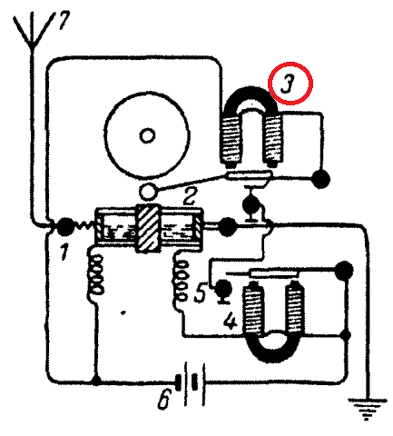

История беспроволочного телеграфа
Web-Quest
Вариант 1
90-е года IX века
Начало XX века
80-е года IX века
2. Кто первый открыл когерер?
А. С. Попов
Э. Бранли
Д. Максвелл
3. Как улучшил когерер А. С. Попов?
Увеличил дальность приема до нескольких десятков метров
Установил непрерывно действующий часовой механизм
Создал очень чувствительный когерер с платиновыми электродами, заполненный железными опилками
4. Какое сопротивление опилок было в трубке радиоприемника А. С. Попова?
До 10 КОм
До 100 КОм
До 100 Ом
5. Что изображено под цифрой 3 на этом рисунке?

Звонковое рыле
Электромагнитное рыле
Антенна
6. Что изображено под цифрой 6 на этом рисунке?
Звонковое рыле
Батарея
Антенна
7. Что демонстрировал А. С. Попов 7 мая 1895 года во время доклада на заседании Русского физико-химического общества?
Передатчик
Когерер
Радиоприемник